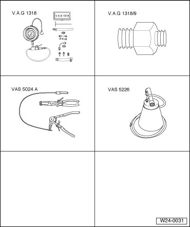
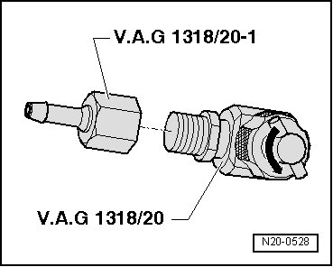
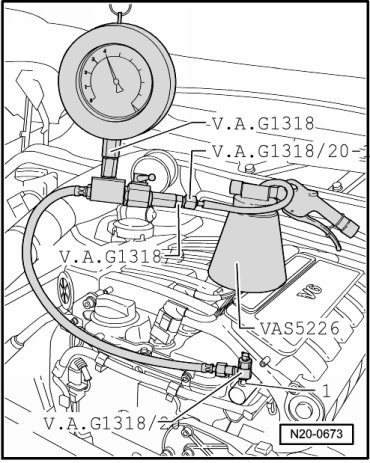
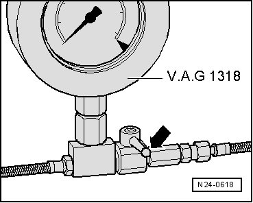

Generic Scan Tool
Diagnostic Procedures
Fuel Pressure Regulator and Residual Pressure, Checking
Function
The fuel pressure regulator regulates the fuel pressure to constant 4.0 bar.

Special tools, testers and auxiliary items required
• Pressure gauge (VAG1318)
• Adapter (VAG1318/9)
• Assembly tool for spring-type clamps (VAS5024A)
• Diesel extractor (VAS5226)
Not illustrated:
• Adapter (VAG1318/20)
• Adapter (VAG1318/20-1)
Test requirements
• Parking brake must be engaged or else daylight driving lights will be switched on.
• For vehicles with automatic transmission, selector lever must be in P.
• Delivery quantity of Fuel Pumps (FP) OK, check , Fuel Pumps (FP), checking.
Test sequence
Observe safety precautions.
Observe rules for cleanliness.
- Remove fuses - 13 - and - 14 - for activation of Fuel Pump (FP) Relay (J17) and Fuel Pump (FP) 2 Relay (J49) from fuse holder.

• Fuses nos. - 13 - and - 14 - are located in fuse holder of E-box, in plenum chamber, left.
- Thread adapter ((VAG1318/20-1)) on adapter ((VAG1318/20)).

- Turn valve at T-piece (arrow) counterclockwise until it is completely open.
- Remove protective cap for bleeder valve on fuel rail.
- Connect pressure gauge ((VAG1318)) with adapters ((VAG1318/20), (VAG1318/20-1), (VAG1318/9)) and diesel extractor ((VAS5226)) as shown to bleeder valve - 1 -.

- Close pressure gauge shut-off valve (lever perpendicular to direction of flow).

- Insert fuses -13- and -14- in the fuse holder.
- Start engine and let run at idle.
- Turn valve at T-piece of adapter (VAG1318/20) clockwise into bleeder valve to stop.
- Open shut-off valve of pressure gauge briefly and close again to bleed the line to the pressure gauge.
- Measure fuel pressure.
Specified value: approx. 4.0 bar positive pressure
- Switch ignition off.
If specified value is not obtained:
- Check flow quantity of Fuel Pumps (FP) , Fuel Pumps (FP).
- Replace fuel pressure regulator if necessary.
- Erase DTC memory of Engine Control Module (ECM) , Diagnostic mode 4: Reset/erase diagnostic data.
- Generate readiness code.
If specified value is obtained:
- Check for proper seal and residual pressure. Observe pressure drop on pressure gauge for this. After 10 minutes at least 3.0 bar positive pressure should still be present.
If residual pressure falls below 3 bar positive pressure:
- Check pressure gauge for proper seal.
- Test check-valves of Fuel Pumps (FP) , Fuel Pumps (FP), checking.
When removing pressure gauge after completed test:
- Remove fuses - 13 - and - 14 - for activation of Fuel Pump (FP) Relay (J17) and Fuel Pump (FP) 2 Relay (J49) from fuse holder.
- Open shut-off valve of pressure gauge to release fuel pressure.
- Place a rag around separating point to catch escaping fuel.
- Remove pressure gauge with adapters.
- Insert fuses - 13 - and - 14 - in the fuse holder.
Final Procedures
After the repair work, the following work steps must be performed in the following sequence:
1. Check the DTC memory. Refer to --> [ Diagnostic Mode 03 - Read DTC Memory ] Diagnostic Modes 01 - 09.
2. If necessary, erase the DTC memory. Refer to --> [ Diagnostic Mode 04 - Erase DTC Memory ] Diagnostic Modes 01 - 09.
3. If the DTC memory was erased, generate readiness code. Refer to --> [ Readiness Code ] Monitors, Trips, Drive Cycles and Readiness Codes.